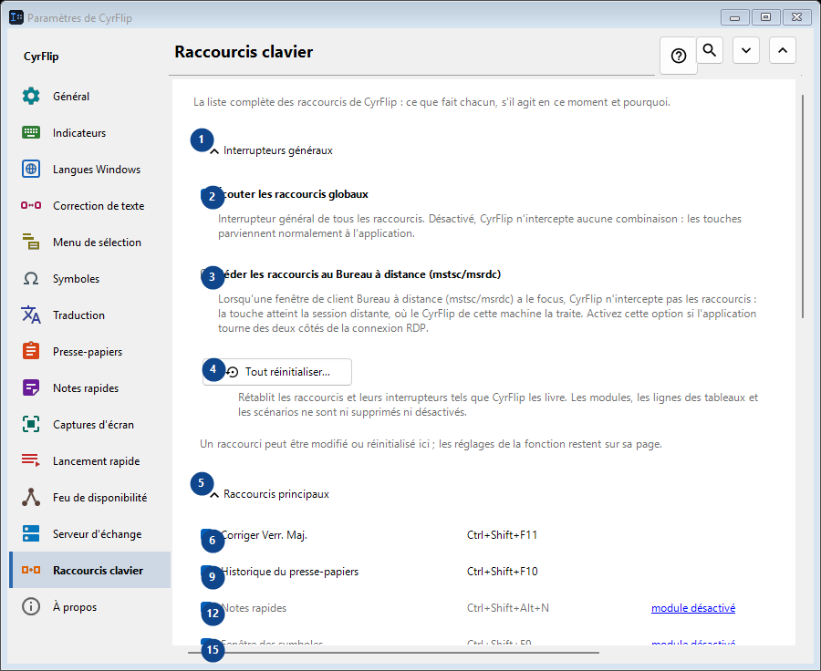
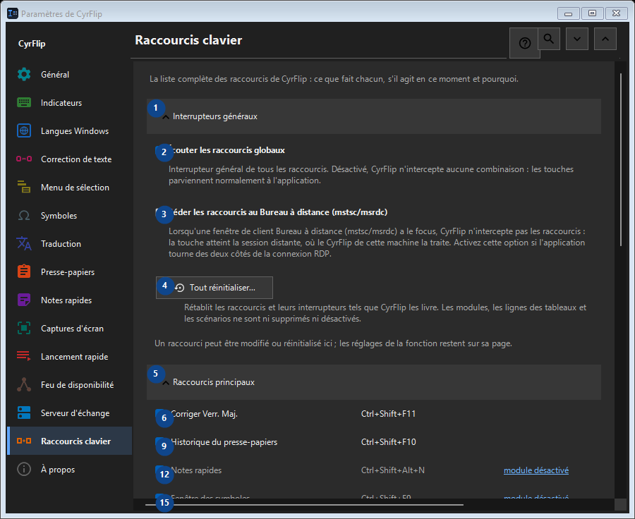

Raccourcis clavier
À quoi cela sert
La liste complète des raccourcis de CyrFlip : ce que fait chacun, s'il agit en ce moment et pourquoi.


Ordre des actions
Les réglages s’appliquent immédiatement. Aucun ordre n’est imposé ; utilisez les groupes ci-dessous.
Éléments
1. Interrupteurs généraux
Utilisez cette commande pour l’action indiquée. Lisez toute confirmation avant de l’accepter.
Vos raccourcis2. Écouter les raccourcis globaux
Interrupteur général de tous les raccourcis. Désactivé, CyrFlip n'intercepte aucune combinaison : les touches parviennent normalement à l'application.
Vos raccourcis3. Céder les raccourcis au Bureau à distance (mstsc/msrdc)
Lorsqu'une fenêtre de client Bureau à distance (mstsc/msrdc) a le focus, CyrFlip n'intercepte pas les raccourcis : la touche atteint la session distante, où le CyrFlip de cette machine la traite. Activez cette option si l'application tourne des deux côtés de la connexion RDP.
Vos raccourcis4. Tout réinitialiser...
Rétablit les raccourcis et leurs interrupteurs tels que CyrFlip les livre. Les modules, les lignes des tableaux et les scénarios ne sont ni supprimés ni désactivés.
Vos raccourcis5. Raccourcis principaux
Utilisez cette commande pour l’action indiquée. Lisez toute confirmation avant de l’accepter.
Vos raccourcis6. Corriger Verr. Maj. Ctrl+Shift+F11
Utilisez cette commande pour l’action indiquée. Lisez toute confirmation avant de l’accepter.
Vos raccourcis7. Modifier... - Corriger Verr. Maj. Ctrl+Shift+F11
Utilisez cette commande pour l’action indiquée. Lisez toute confirmation avant de l’accepter.
Vos raccourcis8. Par défaut - Corriger Verr. Maj. Ctrl+Shift+F11
Utilisez cette commande pour l’action indiquée. Lisez toute confirmation avant de l’accepter. Cet élément est indisponible. Activez d’abord sa fonction ou sélectionnez une entrée.
Vos raccourcis9. Historique du presse-papiers Ctrl+Shift+F10
Utilisez cette commande pour l’action indiquée. Lisez toute confirmation avant de l’accepter.
Vos raccourcis10. Modifier... - Historique du presse-papiers Ctrl+Shift+F10
Utilisez cette commande pour l’action indiquée. Lisez toute confirmation avant de l’accepter.
Vos raccourcis11. Par défaut - Historique du presse-papiers Ctrl+Shift+F10
Utilisez cette commande pour l’action indiquée. Lisez toute confirmation avant de l’accepter. Cet élément est indisponible. Activez d’abord sa fonction ou sélectionnez une entrée.
Vos raccourcis12. Notes rapides Ctrl+Shift+Alt+N
Utilisez cette commande pour l’action indiquée. Lisez toute confirmation avant de l’accepter.
Vos raccourcis13. Modifier... - Notes rapides Ctrl+Shift+Alt+N
Utilisez cette commande pour l’action indiquée. Lisez toute confirmation avant de l’accepter.
Vos raccourcis14. Par défaut - Notes rapides Ctrl+Shift+Alt+N
Utilisez cette commande pour l’action indiquée. Lisez toute confirmation avant de l’accepter. Cet élément est indisponible. Activez d’abord sa fonction ou sélectionnez une entrée.
Vos raccourcis15. Fenêtre des symboles Ctrl+Shift+F9
Utilisez cette commande pour l’action indiquée. Lisez toute confirmation avant de l’accepter.
Vos raccourcis16. Modifier... - Fenêtre des symboles Ctrl+Shift+F9
Utilisez cette commande pour l’action indiquée. Lisez toute confirmation avant de l’accepter.
Vos raccourcis17. Par défaut - Fenêtre des symboles Ctrl+Shift+F9
Utilisez cette commande pour l’action indiquée. Lisez toute confirmation avant de l’accepter. Cet élément est indisponible. Activez d’abord sa fonction ou sélectionnez une entrée.
Vos raccourcis18. Feu de disponibilité Ctrl+Shift+Alt+T
Utilisez cette commande pour l’action indiquée. Lisez toute confirmation avant de l’accepter.
Vos raccourcis19. Modifier... - Feu de disponibilité Ctrl+Shift+Alt+T
Utilisez cette commande pour l’action indiquée. Lisez toute confirmation avant de l’accepter.
Vos raccourcis20. Par défaut - Feu de disponibilité Ctrl+Shift+Alt+T
Utilisez cette commande pour l’action indiquée. Lisez toute confirmation avant de l’accepter. Cet élément est indisponible. Activez d’abord sa fonction ou sélectionnez une entrée.
Vos raccourcis21. Capture d'une zone de l'écran Ctrl+F12
Utilisez cette commande pour l’action indiquée. Lisez toute confirmation avant de l’accepter.
Vos raccourcis22. Modifier... - Capture d'une zone de l'écran Ctrl+F12
Utilisez cette commande pour l’action indiquée. Lisez toute confirmation avant de l’accepter.
Vos raccourcis23. Par défaut - Capture d'une zone de l'écran Ctrl+F12
Utilisez cette commande pour l’action indiquée. Lisez toute confirmation avant de l’accepter. Cet élément est indisponible. Activez d’abord sa fonction ou sélectionnez une entrée.
Vos raccourcis24. Capture de tout l'écran Ctrl+F11
Utilisez cette commande pour l’action indiquée. Lisez toute confirmation avant de l’accepter.
Vos raccourcis25. Modifier... - Capture de tout l'écran Ctrl+F11
Utilisez cette commande pour l’action indiquée. Lisez toute confirmation avant de l’accepter.
Vos raccourcis26. Par défaut - Capture de tout l'écran Ctrl+F11
Utilisez cette commande pour l’action indiquée. Lisez toute confirmation avant de l’accepter. Cet élément est indisponible. Activez d’abord sa fonction ou sélectionnez une entrée.
Vos raccourcis27. Capture d'une zone avec dessin Ctrl+Alt+F12
Utilisez cette commande pour l’action indiquée. Lisez toute confirmation avant de l’accepter.
Vos raccourcis28. Modifier... - Capture d'une zone avec dessin Ctrl+Alt+F12
Utilisez cette commande pour l’action indiquée. Lisez toute confirmation avant de l’accepter.
Vos raccourcis29. Par défaut - Capture d'une zone avec dessin Ctrl+Alt+F12
Utilisez cette commande pour l’action indiquée. Lisez toute confirmation avant de l’accepter. Cet élément est indisponible. Activez d’abord sa fonction ou sélectionnez une entrée.
Vos raccourcis30. Capture de tout l'écran avec dessin Ctrl+Alt+F11
Utilisez cette commande pour l’action indiquée. Lisez toute confirmation avant de l’accepter.
Vos raccourcis31. Modifier... - Capture de tout l'écran avec dessin Ctrl+Alt+F11
Utilisez cette commande pour l’action indiquée. Lisez toute confirmation avant de l’accepter.
Vos raccourcis32. Par défaut - Capture de tout l'écran avec dessin Ctrl+Alt+F11
Utilisez cette commande pour l’action indiquée. Lisez toute confirmation avant de l’accepter. Cet élément est indisponible. Activez d’abord sa fonction ou sélectionnez une entrée.
Vos raccourcis33. Ouvrir le dossier des captures Ctrl+F10
Utilisez cette commande pour l’action indiquée. Lisez toute confirmation avant de l’accepter.
Vos raccourcis34. Modifier... - Ouvrir le dossier des captures Ctrl+F10
Utilisez cette commande pour l’action indiquée. Lisez toute confirmation avant de l’accepter.
Vos raccourcis35. Par défaut - Ouvrir le dossier des captures Ctrl+F10
Utilisez cette commande pour l’action indiquée. Lisez toute confirmation avant de l’accepter. Cet élément est indisponible. Activez d’abord sa fonction ou sélectionnez une entrée.
Vos raccourcis36. Ouvrir le menu au clavier Ctrl+Shift+Alt+M
Utilisez cette commande pour l’action indiquée. Lisez toute confirmation avant de l’accepter.
Vos raccourcis37. Modifier... - Ouvrir le menu au clavier Ctrl+Shift+Alt+M
Utilisez cette commande pour l’action indiquée. Lisez toute confirmation avant de l’accepter.
Vos raccourcis38. Par défaut - Ouvrir le menu au clavier Ctrl+Shift+Alt+M
Utilisez cette commande pour l’action indiquée. Lisez toute confirmation avant de l’accepter. Cet élément est indisponible. Activez d’abord sa fonction ou sélectionnez une entrée.
Vos raccourcis39. Envoyer le presse-papiers au serveur
Utilisez cette commande pour l’action indiquée. Lisez toute confirmation avant de l’accepter.
Vos raccourcis40. Modifier... - Envoyer le presse-papiers au serveur
Utilisez cette commande pour l’action indiquée. Lisez toute confirmation avant de l’accepter.
Vos raccourcis41. Par défaut - Envoyer le presse-papiers au serveur
Utilisez cette commande pour l’action indiquée. Lisez toute confirmation avant de l’accepter. Cet élément est indisponible. Activez d’abord sa fonction ou sélectionnez une entrée.
Vos raccourcis42. Récupérer le presse-papiers depuis le serveur
Utilisez cette commande pour l’action indiquée. Lisez toute confirmation avant de l’accepter.
Vos raccourcis43. Modifier... - Récupérer le presse-papiers depuis le serveur
Utilisez cette commande pour l’action indiquée. Lisez toute confirmation avant de l’accepter.
Vos raccourcis44. Par défaut - Récupérer le presse-papiers depuis le serveur
Utilisez cette commande pour l’action indiquée. Lisez toute confirmation avant de l’accepter. Cet élément est indisponible. Activez d’abord sa fonction ou sélectionnez une entrée.
Vos raccourcis45. Souris
Utilisez cette commande pour l’action indiquée. Lisez toute confirmation avant de l’accepter.
Vos raccourcis46. Modifier... - Menu sur la sélection Ctrl + bouton droit de la souris
Utilisez cette commande pour l’action indiquée. Lisez toute confirmation avant de l’accepter.
Vos raccourcis47. Par défaut - Menu sur la sélection Ctrl + bouton droit de la souris
Utilisez cette commande pour l’action indiquée. Lisez toute confirmation avant de l’accepter. Cet élément est indisponible. Activez d’abord sa fonction ou sélectionnez une entrée.
Vos raccourcis48. Conversion de dispositions
Utilisez cette commande pour l’action indiquée. Lisez toute confirmation avant de l’accepter.
Vos raccourcis49. Traduction
Utilisez cette commande pour l’action indiquée. Lisez toute confirmation avant de l’accepter.
Vos raccourcis50. Lancement rapide
Utilisez cette commande pour l’action indiquée. Lisez toute confirmation avant de l’accepter.
Vos raccourcis51. Windows
Utilisez cette commande pour l’action indiquée. Lisez toute confirmation avant de l’accepter.
Vos raccourcis